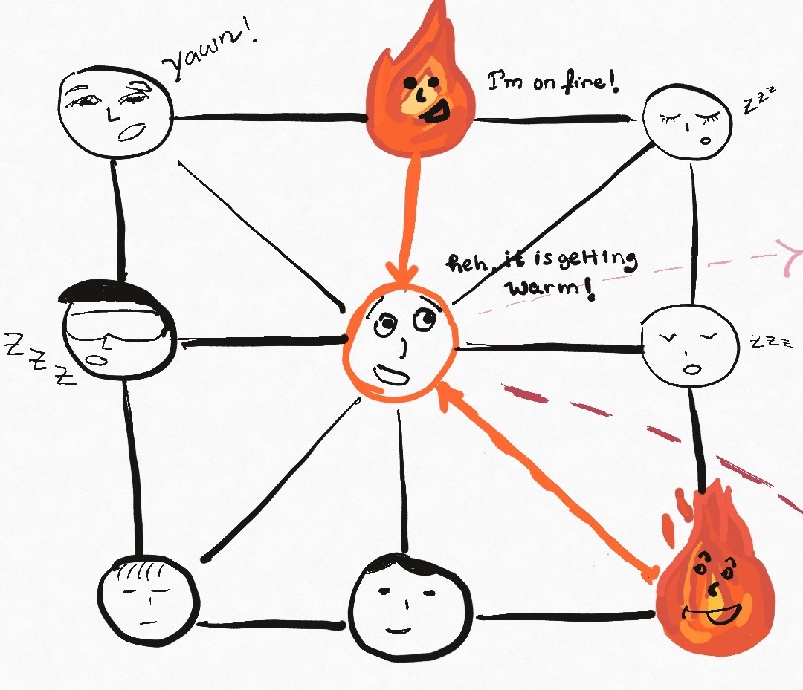
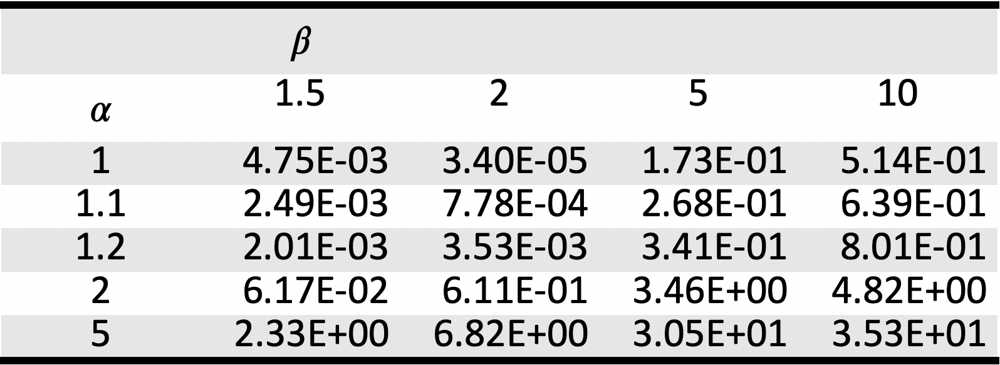
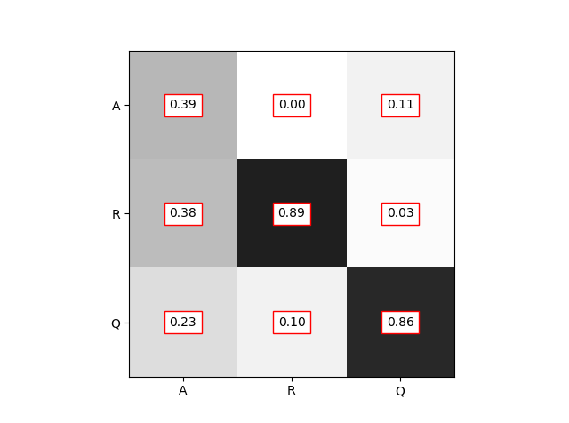
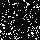
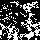
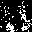
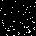
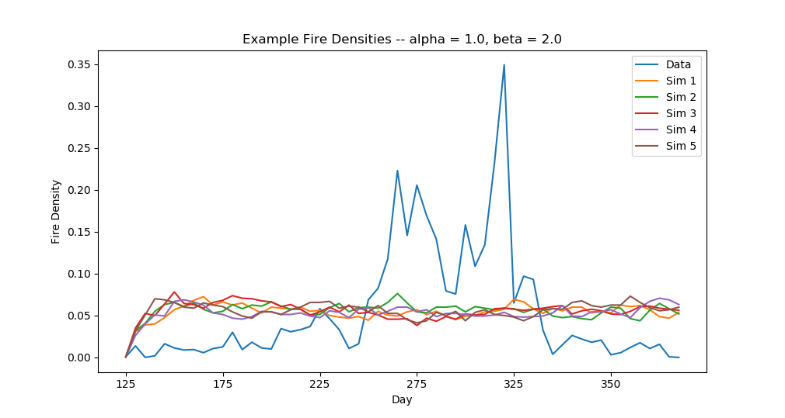

The (Markov) Hidden Connection: Quantifying Neuronal Spikes and Forest Fires
by Fabiana Ferracina and Jacob Pennington (WSU Vancouver)The Hidden Connection: What we will cover
- Review
- Network Model
- $\alpha$'s, $\beta$'s, MSE's and Results
- Importance
Previously in Hidden Connections
Inspired by the idea that one can relate forest fires to neuronal spikes.
- DTMC with three states: active, refractory, quiescent.
- HMM with observed thermal readings labeled fire or no fire.
- We have a transition prob. matrix $P$, a observed$\rightarrow$state prob. matrix $B$ and an initial state vector $\pi$.
- We wish to find the model $\lambda = (P, B, \pi)$ that maximizes the likelihood of the given observation sequence.
The Data
- NASA's satellites Aqua and Terra payload MODIS, as before.
- Lower spatial resolution than before: 1 km$^2$ per pixel.
- But we get more frequent images! 1 for each day of the year.
- The place is still the Western Amazon. Two data sets: 2010 and 2019.
The Data

The higher temporal resolution makes the data is too sparse. Thus we decreased it to 5 days per time step. We also decreased the spatial to 10 km$^2/$pixel.
The Network Model
A Network of HMMs
Each node in the network is an HMM like decribed before.

How Transitions Work
As an example consider a node $C$ with transition probabilities matrix $P_0$ at time $t=0$.
If $C$ is adjacent to two active nodes at $t=0$, then at $t=1$ its transition probalities matrix becomes $P_1$.
HMM Implementation: Same as Before
Initial Pre-chosen Values:
$$\pi = \begin{pmatrix}0.005\\0.005\\0.990\end{pmatrix}, \ P = \begin{pmatrix}0.50 & 0.01 & 0.09\\0.25 & 0.90 & 0.01\\0.25 & 0.09 & 0.90\end{pmatrix},$$$$B = \begin{pmatrix}0.1 & 0.9\\0.9 & 0.1\\0.9 & 0.1\end{pmatrix}.$$
Solve for $\lambda$ with Baum-Welch algorithm.
$\alpha$'s, $\beta$'s and MSE's
However, within a spatial 2D network, we further update the transition probabilities matrix $P$ for each node in the network (e.g a patch of land), at each time step, conditional on the states of the neighboring nodes.
These updates occur as newly introduced weights $\alpha$ and $\beta$, which are applied to the states $a \rightarrow a$ and $q \rightarrow a$ of the transition matrix $P$ for each node at each time step.
Wait!...the MSE's?
We run a Monte Carlo simulation to find the $(\alpha, \beta)$ pair that minimizes the mean squared error (MSE) of the fire density in our training dataset. For example, here are 25 such pairs and their corresponding MSE's:
Fitted Transition Probabilities
Results
$\alpha = 1, \beta = 10$: adjacent quiecents get more affected.
Results
$\alpha = 2, \beta = 10$: active nodes and adjacent quiecents get more affected.
Results
$\alpha = 2, \beta = 2$: active nodes and adjacent quiecents get more affected.
Results
$\alpha = 1, \beta = 2$: best multipliers.
(left: low resolution version of training data, right: the results)
Results
However, we still have a long way to go...
Importance
If we can predict fire spread and magnitude from earlier remote sensed data:
- We can fight it with the appropriate response later.
- We can investigate problem areas and come up with mitigation responses.
- If we can modify the vegetation in order to prevent large escalations.
- We can evacuate animal and human inhabitants before it is too late.